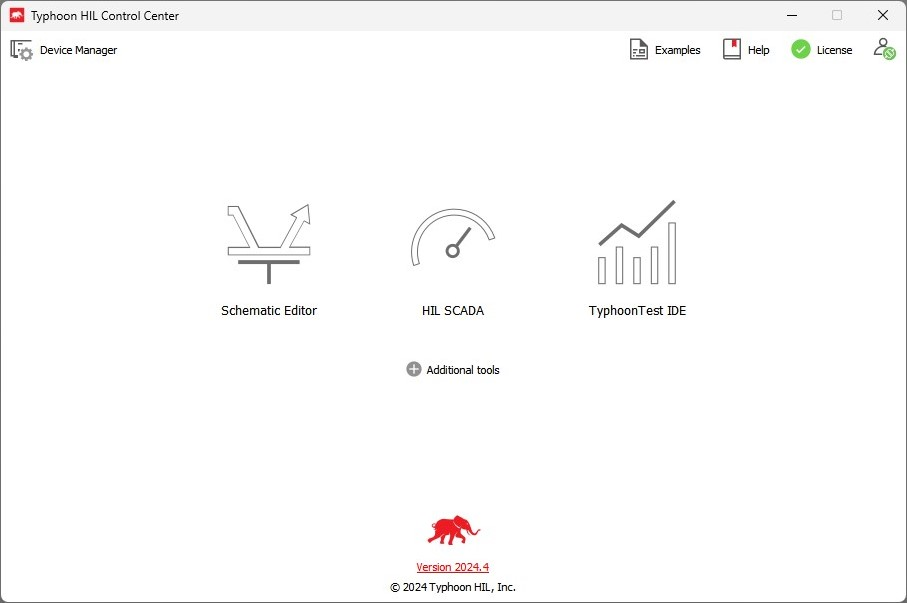
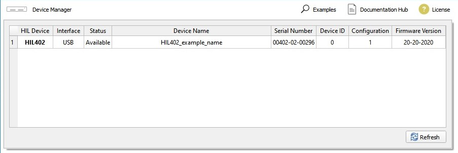
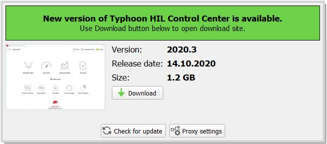
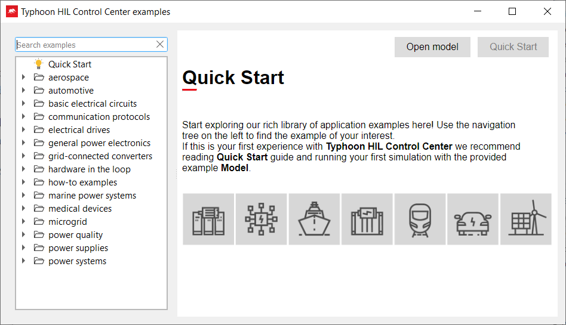
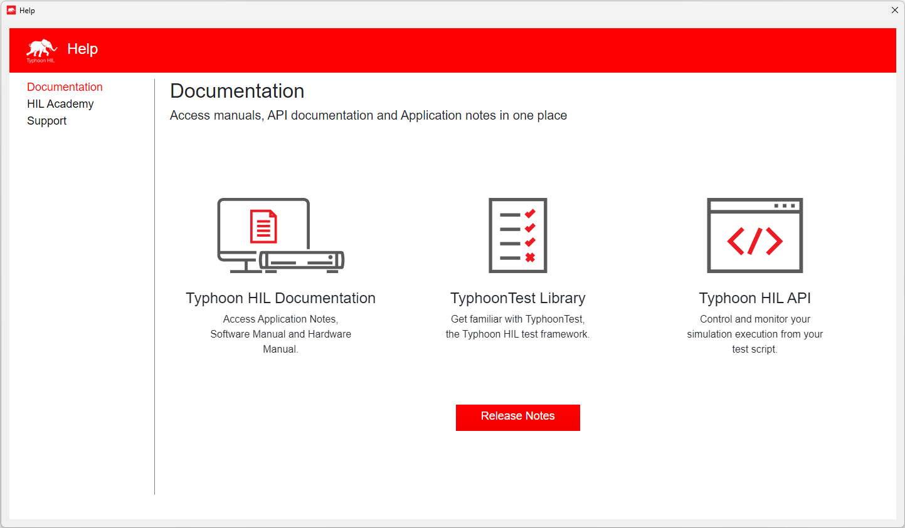
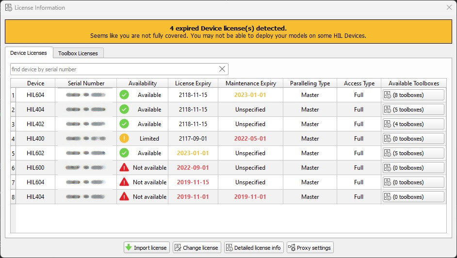
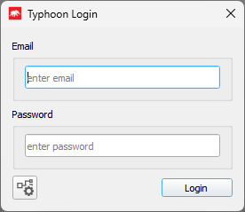
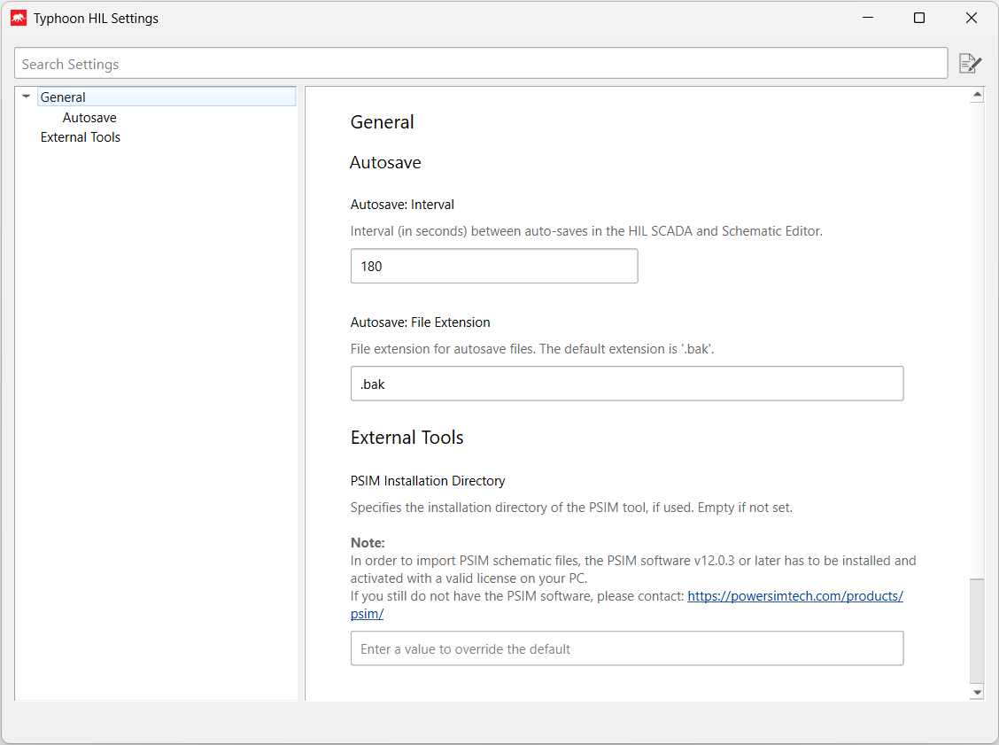

Typhoon HIL Control Center
This section provides a general description of Typhoon HIL Control Center and lists the main software components accessible from it, as well as additional software tools which can be invoked from its interface.
Typhoon HIL Control Center integrates all standard software components. The Welcome screen (Figure 1) opens on the application startup, containing shortcuts to all standard toolchain components. Each tool started from the Typhoon HIL Control Center will be shown in an independent window.

The Welcome screen contains links to the following tools:
By clicking on the Additional tools button, you will show/hide links from which you can start all other tools. These tools can also be started using appropriate shortcuts which are created during software installation (in the Start menu, Typhoon HIL Control Center-> Tools subsection).
In the upper left corner, you will find the button () that opens the small Device Manager panel whose purpose is to show information about all connected HIL devices (Figure 2).

Also, another button () is visible in the same place when an update is available. By clicking on it, the Update Notification panel will be shown (Figure 3).

In the right upper corner you can find the () button which opens Example Explorer (Figure 4) with a searchable list of available examples that come with the Typhoon HIL Control Center installation.

After Example Explorer, you can find the () button which opens Help (Figure 5) with the available documentation that comes with the Typhoon HIL Control Center installation.



